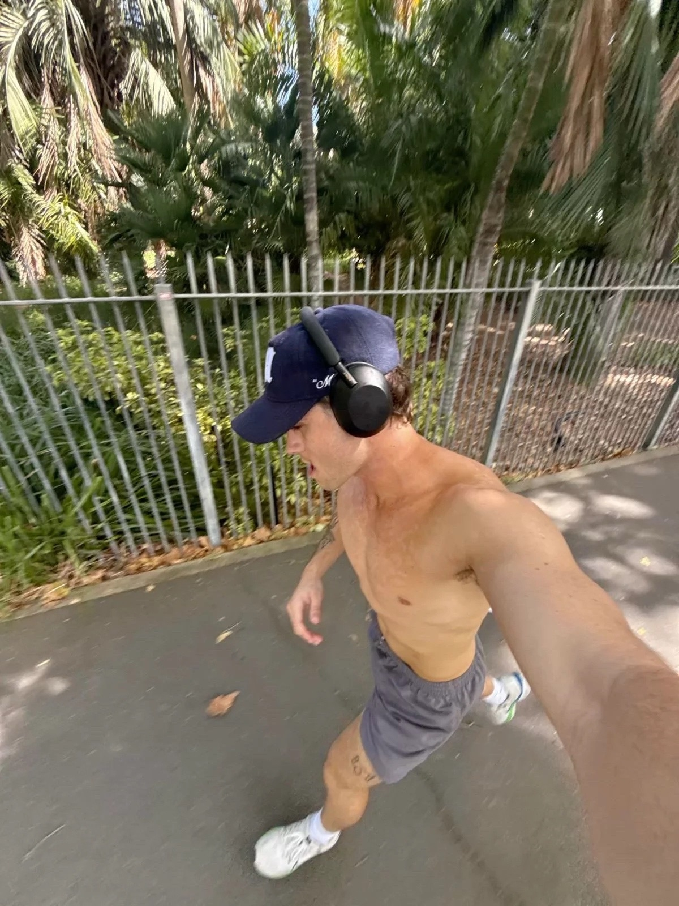

Мотивация и привычки
Мотивация помогает начать, но привычки помогают продолжать. Поэтому важно не только вдохновиться, но и создать удобную систему действий.
Не стоит требовать от себя идеального результата сразу. Лучше двигаться маленькими шагами: сегодня сделать зарядку, завтра пройтись пешком, потом улучшить питание.
Когда человек видит даже небольшой прогресс, ему становится легче продолжать. Поэтому полезно записывать свои цели и отмечать достижения.

Как не бросить?
Не нужно сравнивать себя с другими. У каждого человека свой темп, свои возможности и свой образ жизни.
Если один день не получилось выполнить план — это не провал. Главное не останавливаться полностью и вернуться к привычкам на следующий день.
Здоровый образ жизни должен быть комфортным. Если привычки слишком сложные, человек быстро устанет. Поэтому лучше выбирать реальные цели.
Ставь цель
Например: стать сильнее, улучшить сон или набрать мышечную массу.
Следи за прогрессом
Фиксируй вес, тренировки, питание и самочувствие.
Не перегружайся
Отдых тоже часть результата, особенно после тренировок.
Делай удобно
Привычка должна подходить твоему расписанию.
Как справиться с выгоранием?
Выгорание появляется, когда нагрузка становится слишком большой или привычки превращаются в рутину. Важно вовремя замечать усталость и реагировать.
Делайте короткие перерывы, чтобы восстановить силы. Меняйте виды активности, чтобы не терять интерес.
Ставьте реальные цели и радуйтесь даже маленькому прогрессу. Общение с друзьями или единомышленниками помогает поддерживать мотивацию.
Практикуйте дыхательные упражнения или медитацию — это помогает снять стресс и сосредоточиться на главном.